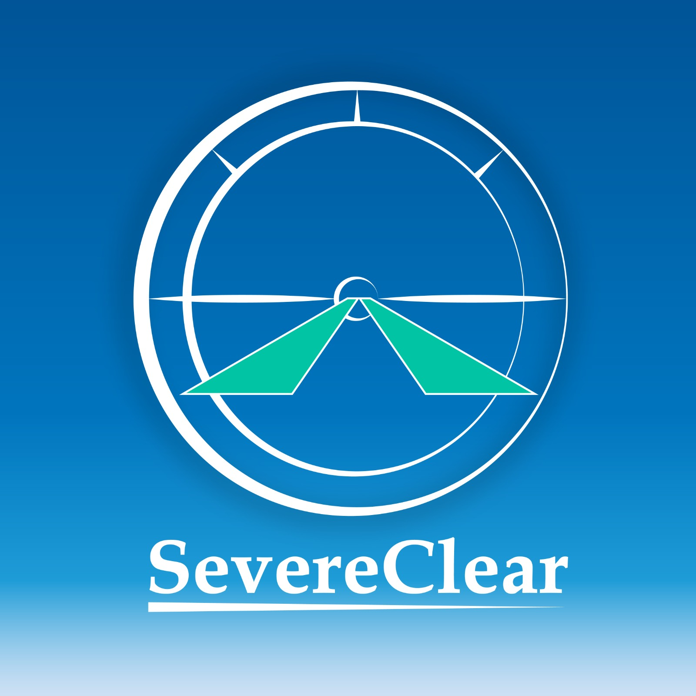

DeWayne is currently a developer at Knoxville Utilities Board, specializing in creating custom web applications and integrations for both internal and external customers.
If you're interested in joining the team, explore internship and full-time opportunities at www.kub.org/careers.

DeWayne is a founding member of SevereClear, LLC, a software development agency that specializes in modern web applications and custom integrations.
Leveraging cloud-based technologies, SevereClear delivers secure, scalable and user-focused solutions to power robust line-of-business applications. Their solutions are tailored to meet each client’s unique needs with precision and dependability.